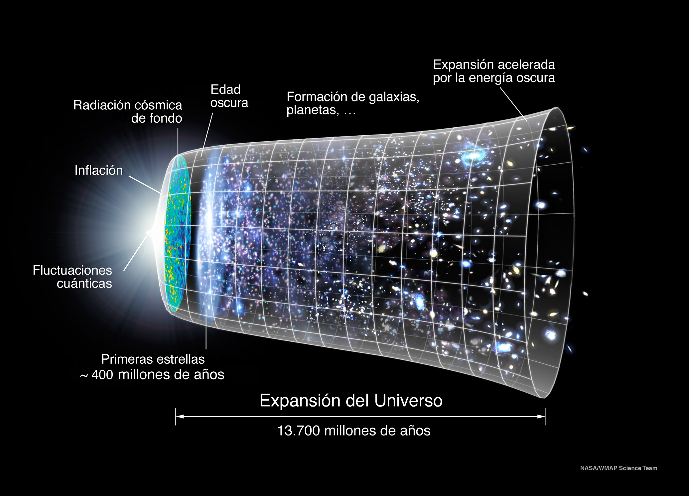
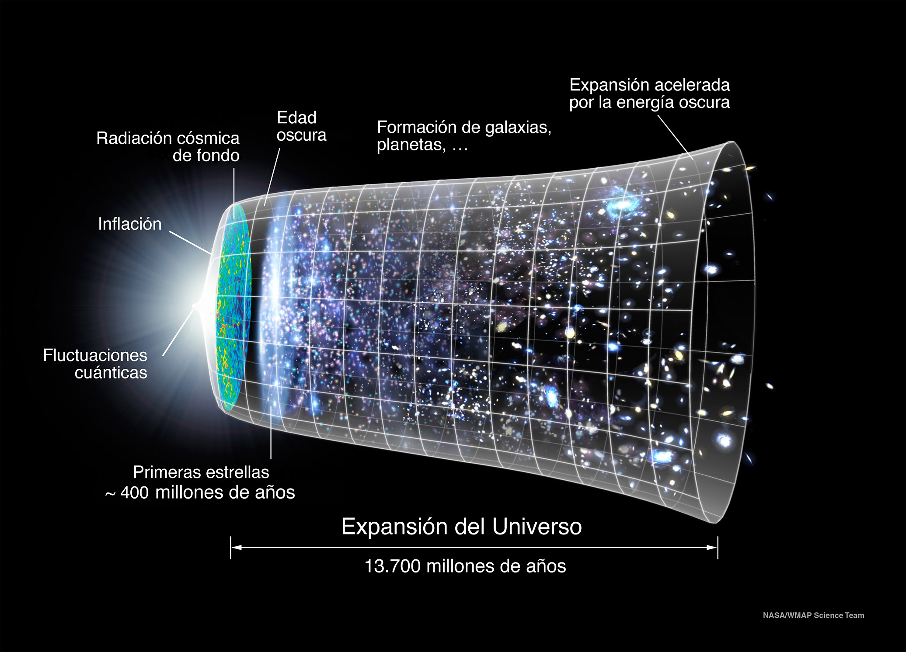

Big Bang
El Big Bang es una de las teorías más fascinantes y ampliamente aceptadas en la cosmología moderna sobre el origen del universo. En este blog abordaremos sobre que es.
¿Qué es el Big Bang?
Hace unos 13,800 millones de años, toda la materia del universo estaba concentrada en un punto infinitamente pequeño y de altísima densidad. En un momento dado, este punto "explotó" y comenzó a expandirse en todas las direcciones, dando origen al universo, al espacio y al tiempo. Los físicos teóricos han logrado reconstruir los eventos desde 1/100 de segundo después del Big Bang.
Inicialmente, el universo estaba en un estado extremadamente caliente y denso. A medida que el universo se expandía, se enfriaba lo suficiente como para permitir la formación de las primeras partículas subatómicas, como electrones, positrones, mesones, bariones, neutrinos y fotones, entre otras. Con el enfriamiento continuado, los protones y neutrones se unieron para formar núcleos atómicos, y posteriormente, los electrones se combinaron con estos núcleos para formar átomos.
Bajo la influencia de la gravedad, la materia comenzó a agruparse, formando nubes de los elementos primordiales. Algunas de estas nubes crecieron tanto que comenzaron a colapsar bajo su propia gravedad, formando estrellas. Estas estrellas se agruparon para formar galaxias.
 Evidencias del Big Bang
El Big Bang es una de las teorías más fascinantes y ampliamente aceptadas en la cosmología moderna sobre el origen del universo. En este blog abordaremos sobre que es.
¿Qué es el Big Bang?
Hace unos 13,800 millones de años, toda la materia del universo estaba concentrada en un punto infinitamente pequeño y de altísima densidad. En un momento dado, este punto "explotó" y comenzó a expandirse en todas las direcciones, dando origen al universo, al espacio y al tiempo. Los físicos teóricos han logrado reconstruir los eventos desde 1/100 de segundo después del Big Bang.
Inicialmente, el universo estaba en un estado extremadamente caliente y denso. A medida que el universo se expandía, se enfriaba lo suficiente como para permitir la formación de las primeras partículas subatómicas, como electrones, positrones, mesones, bariones, neutrinos y fotones, entre otras. Con el enfriamiento continuado, los protones y neutrones se unieron para formar núcleos atómicos, y posteriormente, los electrones se combinaron con estos núcleos para formar átomos.
Bajo la influencia de la gravedad, la materia comenzó a agruparse, formando nubes de los elementos primordiales. Algunas de estas nubes crecieron tanto que comenzaron a colapsar bajo su propia gravedad, formando estrellas. Estas estrellas se agruparon para formar galaxias.
 Evidencias del Big Bang
- Radiación de Fondo Cósmico de Microondas (CMB): Descubierta en 1965 por Arno Penzias y Robert Wilson, esta radiación es el remanente del calor del Big Bang, observable hoy como un débil resplandor en todas las direcciones del espacio.
- Corrimiento al Rojo de las Galaxias: Observaciones de Edwin Hubble en la década de 1920 mostraron que las galaxias se alejan de nosotros, lo que indica que el universo se está expandiendo. Cuanto más lejos está una galaxia, más rápido se aleja, lo que se conoce como ley de Hubble.
- Abundancia de Elementos Ligeros: Las proporciones de hidrógeno, helio y otros elementos ligeros en el universo concuerdan con las predicciones de la nucleosíntesis primordial.